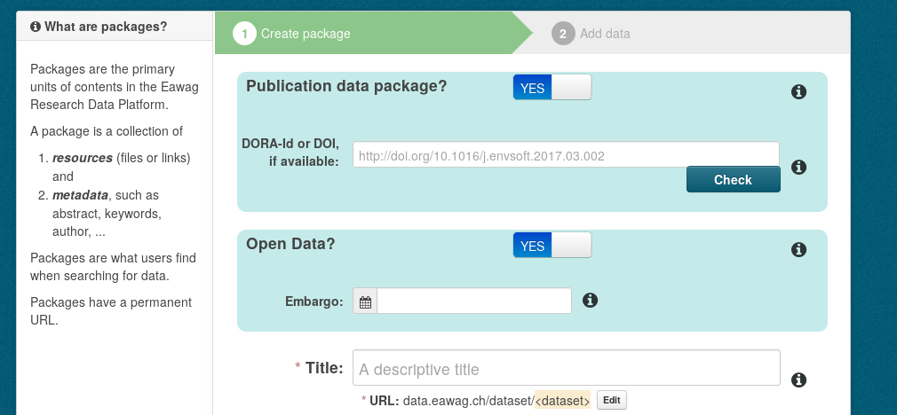
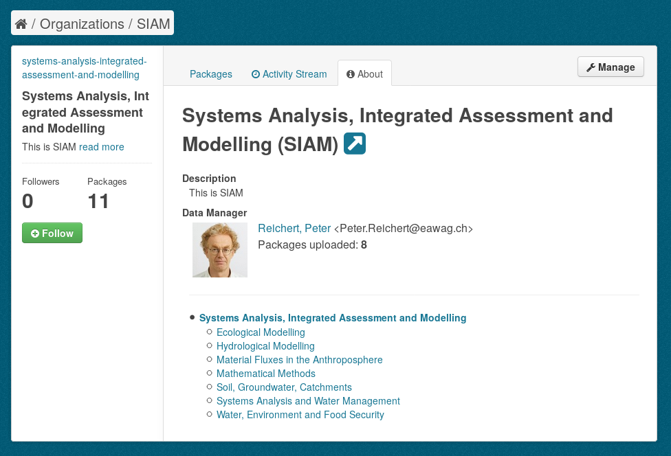
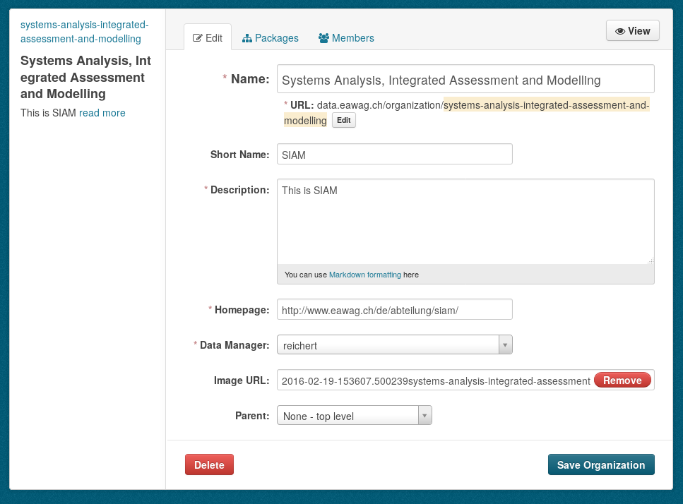
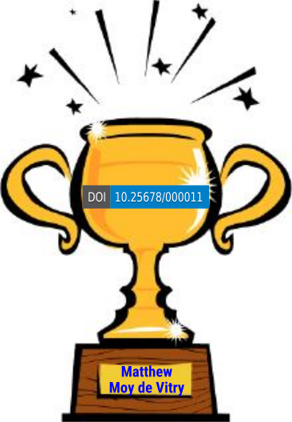
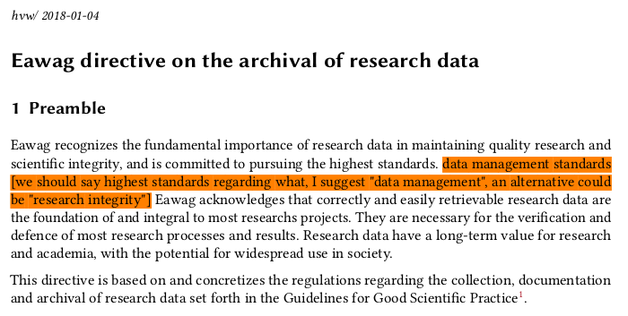

Eawag Research Data

Eawag Research Data
— current status and challenges —

Overview
- technical infrastructure
development:
ERIC-internal, ERIC-public, ERIC-control
(ERIC = Eawag Research Data Institutional Repository) - support activities:
consulting w.r.t. "open data", DMP, general data management - other tasks:
policy development, outreach
Infrastructure
Software development
&
system administration
ERIC-internal
- Integrated user-feedback from public beta
- Added some necessary features (private data, publication package workflow)
- Connected to 11 TB fast storage
- SOLR index in Postgres DB in separate VM
ERIC-internal
Improved support for publication data packages:

ERIC-internal
Improved representation of the organizational structure:

ERIC-internal
Improved representation of the organizational structure:

ERIC-internal
TODO
- interactive georeferencing
- multi-file upload in web-GUI
- streamline metadata-entry / complete documentation
- improved keyword parsing (comma as separator)
- complete organization display / initial datamangers
- creators record (ORCID, affiliation)
- clean up resources metadata-input (automation)
- auto-generate cryptographic hash / MIME-type / size
- display content of zip-archives
- bulk download (as zip archive)
- "restricted records"
ERIC-public
- Separate stripped-down (no user-management and package upload) CKAN instance.
- Separate (logical) storage: Exploit FS-level deduplication.
- Separate Index and DB (next step).
- In the DMZ.
- Consider it hacked.
- Establish that quick & ugly
Eric-control
DOI-minting
public-internal-management
DORA integration
- DOI minting works semi-automatically (fill a
JSON-template)
There will be always a manual step (correctness check)
A workflow augmented with a GUI needs to be established in the long run. - public-internal-management: Not even
started.
I envision an independent micro-service.
Start with CLI-scripts. - DORA-integration: postponed indefinitely.
Eric-control
DOI-minting
DOI minting
- Curently being worked on.
- Set of tools that works
- a) as CLI scripts (used now),
- b) can be used as modules for webapp.
doigenerator.py, mkdcxml.py, daciapi.py, doicontrol.py- Our DOI prefix is 10.25678
- We have our first DOI (currently hosted at Zenodo): https://doi.org/10.25678/000011

Support
consultancy & services
Consultancy
& Services
- Storage procurement:
We want to move 5 TB from external HDs to somewhere
=> develop IT-policy for shared storage access, develop intra-IT workflow, act as first contact for storage management. - SNSF Data Management Plan: Individual reviews, SNSF DMP Guide, workshops.
- "Open Data", data journals, data publication strategy, ...
- General data management: data bases, workflow, project planning, file formats, software, ...
Consultancy
& Services
- ERIC support & workshops
- ERIC system administration
- data package quality control:
calculate ~1 hr per data package - DOI management:
- Still quite manual
- currently involves Zenodo or other public repository
Other
outreach &
policy development
Outreach
& Policy
- Development of an Eawag data archival policy 
- Maintenance of Eawag research data management website: opendata.eawag.ch
Questions?